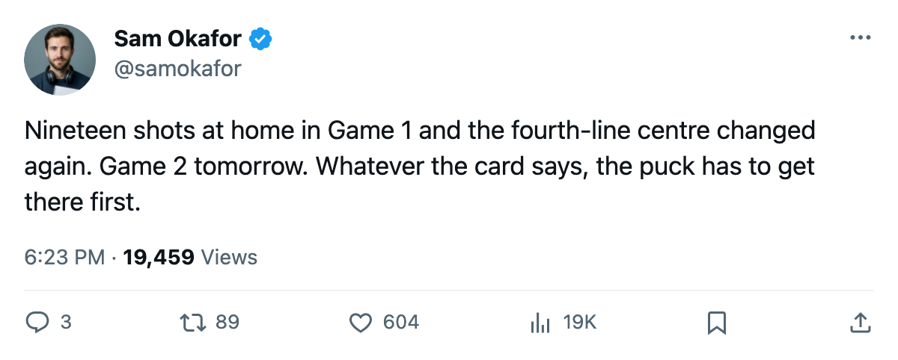

LEAFS 1, PENGUINS 3, series 0-1: 19 shots at home, and the fourth line gets a new centre
Pittsburgh takes the opener at the Air Canada Centre; Game 2 is tomorrow night.
 Sam OkaforLeafs beat reporter · Queen City Telegram
Sam OkaforLeafs beat reporter · Queen City Telegram
Pittsburgh beat Toronto 3-1 at the Air Canada Centre on 2005-04-22 and leads the second-round series 1-0. Game 2 is 2005-04-24 in the same building.
The number to hold is 19. That is what  Toronto Maple Leafs put on the Pittsburgh goal at home in Game 1. The
Toronto Maple Leafs put on the Pittsburgh goal at home in Game 1. The  Pittsburgh Penguins put 28 on Toronto. In the regular season this matchup read 4-1-0 for the Leafs, 21-12 on goals, with two one-goal games. None of that showed up Friday.
Pittsburgh Penguins put 28 on Toronto. In the regular season this matchup read 4-1-0 for the Leafs, 21-12 on goals, with two one-goal games. None of that showed up Friday.
The card changed in two places
 Maxim Afinogenov85 dressed for Game 1, and
Maxim Afinogenov85 dressed for Game 1, and  Rick Nash82 moved down a line to make room. Konstantin Koltsov72 came out. On the fourth line,
Rick Nash82 moved down a line to make room. Konstantin Koltsov72 came out. On the fourth line,  Jason Spezza71 gave way to Vaclav Spacek76, 19, who has 50 games and 17 points this season at 7.6 minutes a night. Spezza's line is 46 games and 15 points at 6.7.
Jason Spezza71 gave way to Vaclav Spacek76, 19, who has 50 games and 17 points this season at 7.6 minutes a night. Spezza's line is 46 games and 15 points at 6.7.
The goalie room turned over its backup slot: Maxime Ouellet81 dressed, Mikael Tellqvist74 did not. Ouellet is 23 and the Book grades him 82, with a 97 potential. Tellqvist is 25, graded 75, and the Bureau's Development Index has him down three.
What Pittsburgh is bringing
 Mario Lemieux88 has 8 points in 7 games this spring, 2 goals and 6 assists. Eric Meloche77, who took the Calder last season, has 5 goals and 2 assists, 7 points in 7.
Mario Lemieux88 has 8 points in 7 games this spring, 2 goals and 6 assists. Eric Meloche77, who took the Calder last season, has 5 goals and 2 assists, 7 points in 7.  Shane Willis74 and
Shane Willis74 and  Martin Straka85 have 4 points each. Pittsburgh got here by beating
Martin Straka85 have 4 points each. Pittsburgh got here by beating  New Jersey Devils in six games, the last of them in overtime.
New Jersey Devils in six games, the last of them in overtime.
Toronto's spring scoring runs through  Marian Gaborik97 at 3-5-8 in 6 games,
Marian Gaborik97 at 3-5-8 in 6 games,  Gary Roberts87 at 1-6-7,
Gary Roberts87 at 1-6-7,  Mats Sundin90 at 3-1-4 and
Mats Sundin90 at 3-1-4 and  Alexander Mogilny89 at 2-1-3. The Bureau's Index has Gaborik up six, and the Book reads him at 98.
Alexander Mogilny89 at 2-1-3. The Bureau's Index has Gaborik up six, and the Book reads him at 98.
| goaltender | W-L | GAA | save pct |
|---|---|---|---|
 Roberto Luongo93, TOR Roberto Luongo93, TOR | 4-2 | 1.68 | .954 |
 Johan Hedberg87, PIT Johan Hedberg87, PIT | 4-2 | 1.83 | .913 |
| Sebastien Caron79, PIT | 1-0 | 1.00 | .952 |
Game 2 is 2005-04-24 at the Air Canada Centre. The series then goes to Pittsburgh for 2005-04-26 and 2005-04-28.
